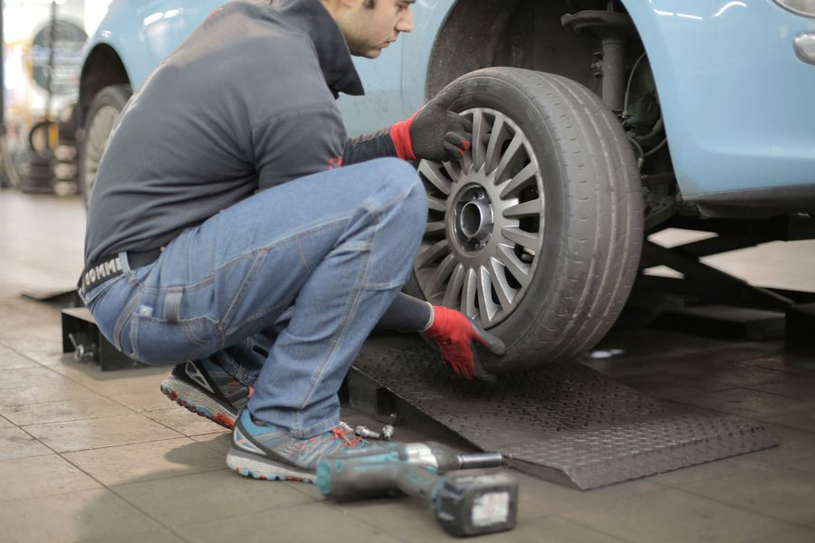
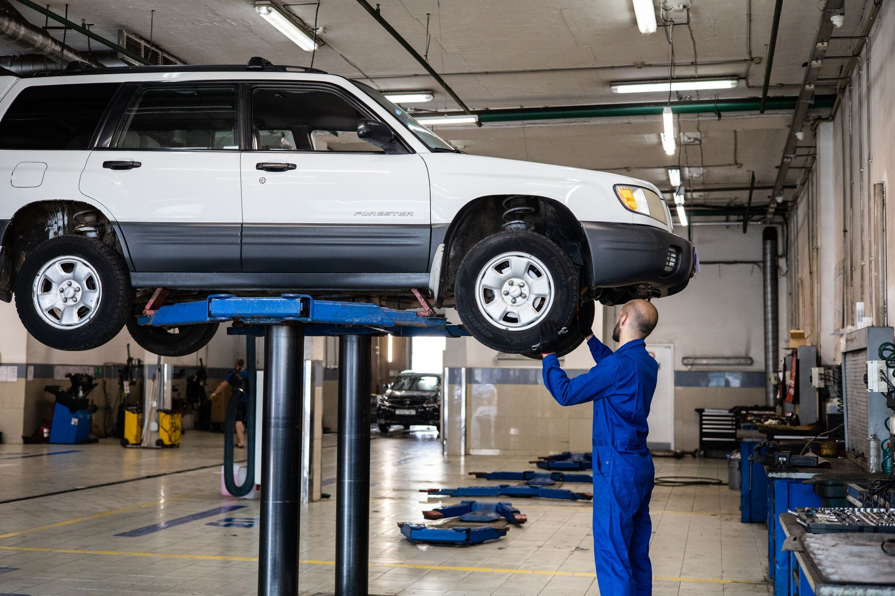
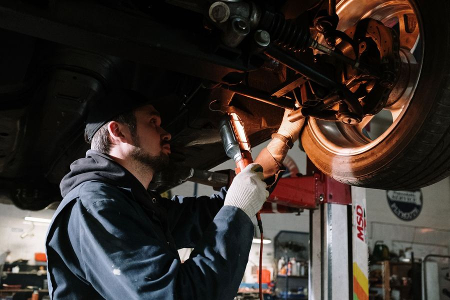
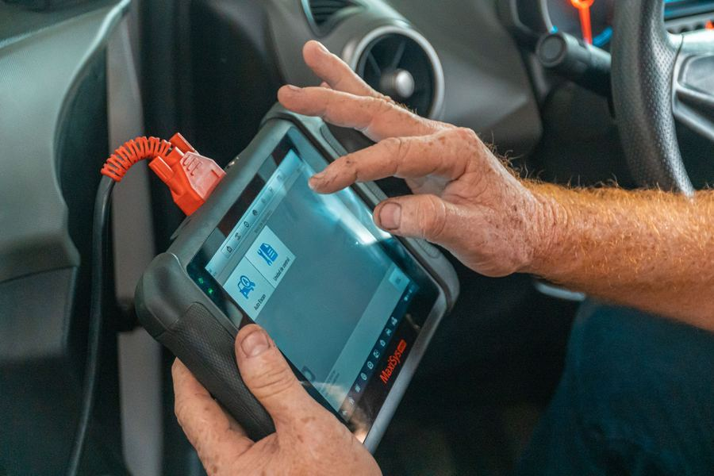

Pneus
Vente et pose de pneus d’été et d’hiver. Garage détaillant du réseau Pneus Prestige.
Maquette non officielle · Leonel Djikeleng Solutions · coordonnées à confirmer · photos d’illustration

Entretien, réparations, vente et pose de pneus, au 70, rue Saint-Théophile. Prenez rendez-vous en ligne, même quand le garage est fermé.
Image d’illustration
Nos services

Vente et pose de pneus d’été et d’hiver. Garage détaillant du réseau Pneus Prestige.

Un bruit, un voyant, une vibration : on trouve la cause et on vous dit quoi réparer, avant de commencer.
L’entretien régulier de votre véhicule, pour rouler tranquille et éviter les mauvaises surprises.
Photos d’illustration. Elles seront remplacées par les vraies photos du garage.
Vos pneus
Faites glisser le curseur. À gauche, une bande de roulement usée ; à droite, une bande neuve. Plus les rainures sont profondes, mieux le pneu évacue l’eau et la neige.
Un doute sur les vôtres ? Demandez une vérification au garage.
Faire vérifier mes pneusComment ça marche

En ligne, à toute heure, ou par téléphone. Le garage vous confirme le moment, et vous recevez un rappel la veille.
Avant les travaux, vous recevez le prix par écrit, signé par le garage, à accepter en ligne.
Les travaux faits, le garage vous appelle. Vous repartez en sachant ce qui a été fait.
Cet espace affichera les vrais avis Google du garage, tels quels, avec le nom de l’auteur et la date.
Espace réservé de la maquette : aucun avis n’est inventé.
Rendez-vous
Remplissez le formulaire quand ça vous convient. Le garage reçoit votre demande directement et vous rappelle pour confirmer.
C’est préférable pour être servi rapidement. Vous pouvez le demander en ligne, à toute heure, ou appeler le 418 667-9898 pendant les heures d’ouverture.
Oui. Le garage vend et pose des pneus d’été et d’hiver ; il est détaillant du réseau Pneus Prestige.
Oui. Au Québec, le garage doit vous remettre une évaluation écrite avant une réparation, sauf si vous y renoncez par écrit. Pour les travaux courants, le devis vous est envoyé et vous l’acceptez en ligne.
Du lundi au vendredi, de 8 h à 12 h et de 13 h à 17 h. Fermé la fin de semaine. Heures à confirmer avec le garage.
Au 70, rue Saint-Théophile, à Beauport (Québec), G1C 3B6. Les liens ci-dessous ouvrent l’itinéraire dans votre application.